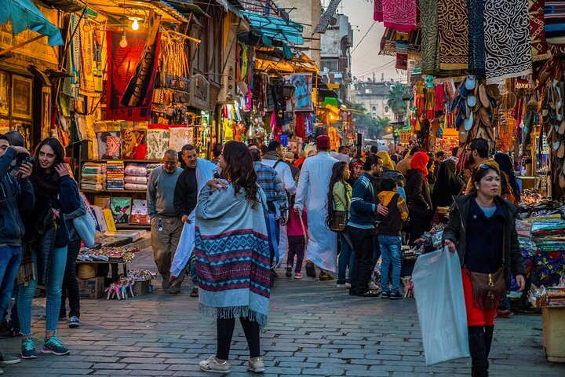
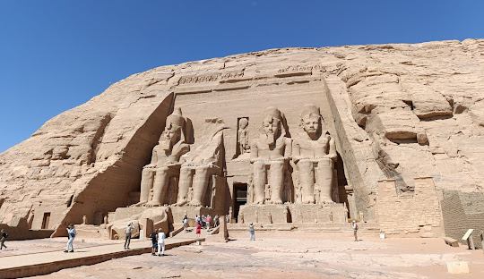

神秘世界
古埃及文明與金字塔



History
旅遊點簡介 Giza Pyramids 位於 Giza，靠近首都 Cairo，是世界七大奇蹟之一。 📜 2. 相關歷史 吉薩金字塔建於約公元前2500年，是古埃及第四王朝的陵墓。 最大的是 Great Pyramid of Giza 為法老 Khufu 所建 建築技術至今仍令人驚嘆 👉 已屹立超過4500年。

Attractive
3. 旅遊點吸引點 🏜️ 壯觀金字塔群：世界最古老大型建築之一 🗿 獅身人面像：Great Sphinx of Giza 神秘又震撼 🐪 騎駱駝體驗：沙漠風情濃厚 🌅 日出／日落景色：非常壯麗 👉 非常適合歷史迷與攝影愛好者。
Food
4. 附近美食推薦 來到埃及必試當地特色： 🥙 Falafel（炸鷹嘴豆餅） 🍚 Koshari（國民料理） 🍢 Kebab（烤肉串） 🍞 Pita（薄餅） 👉 附近餐廳多為地道中東風味。。
交通方法
🚗 前往吉薩金字塔的方法： ✈️ 先到 Cairo 國際機場 🚕 的士 / Uber最方便 🚌 當地巴士：較便宜但較複雜 🚐 旅行團：最省心 👉 從開羅市中心出發約30-45分鐘即可到達。